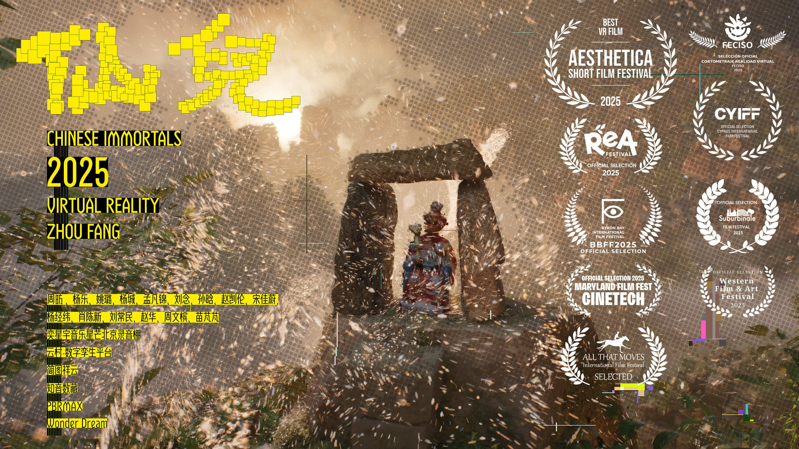
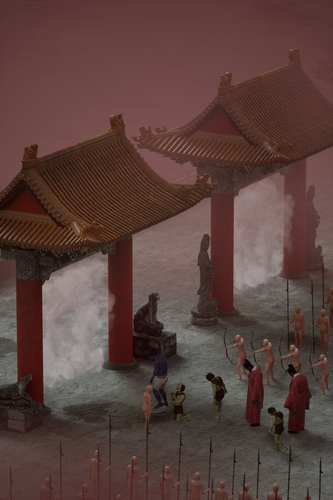

周昉
Zhou Fang
不信邪工作室 NOJINX STUDIO
作品 / Work
我不是夸父
I Am Not Kua Fu
类型VR 沉浸式叙事游戏
视角第一人称 · 直播镜头
设定2050
状态开发中
本文件包含《我不是夸父》的项目陈述、故事板与角色设计，以及周昉完整的展览、电影节与获奖记录。配套网页（中文 / English）与本文件版式一致。
周昉 我不是夸父作品与简历 2026
01
项目
Project
一个主播，一个「野人」，
和一场关于观看的追逐。
《我不是夸父》是一款以第一人称直播镜头为唯一叙事界面的VR 沉浸式叙事游戏。玩家戴着头显，被直接放进小K 的直播信号里：2050 年的森林，一次寻常的直播任务——直到一名神秘的「野人」走进画面。此后发生的一切，都被平台、观众与算法同时观看。
它延续了《仙儿》建立的 VR 方法：那部 14 分钟的短片用两万张照片扫描出一座座民间神像，让观众在神像之间穿行；这一次，观众被直接装进一台正在直播的机器——头盔就是那台机器，镜头就是玩家的眼睛。
故事开始于一次寻常的拍摄。小K骑着摩托在山地追逐这个不断变大的野人：玩家亲手敲下一段标志性口癖，也模仿它的动作，靠声音与动作与它建立一种「共振」。但当阳光重新出现，共振断裂，它只追着太阳跑——最终在海岸边展开身形，「夸父降世」。
玩家随后切换为危机处置人员 B，任务是阻止代号「夸父」的生物进入城市：击杀，还是击伤？击中的部位不同，后面的一切都会不同。夸父被制服后，被运往由大型干船坞改造的收容中心；军方与泛娱乐公司为它的商业价值争论不休，最后的妥协是——先让它试播一场。大网红小K成了它的「管理员」。
再往后，玩家要决定是否操纵夸父做猎奇夸张的表演。这条路通向四种结局：娱乐至死、习得性无助、功败垂成、归隐自然。
夸父逐日，是关于追赶一个不可抵达之物的神话。在游戏里，被追赶的东西换成了流量、奇观与他人的注视——每一个观看者，都参与了夸父的长大。
- 类型
- VR 沉浸式叙事游戏（VR immersive narrative game）
- 平台
- VR · 主流头显（一体机 / PC VR）
- 视角
- 第一人称 · 直播镜头（First person / livestream camera）
- 设定
- 2050 年 · 沿海城市
- 结构
- 四章 + 四种结局
- 核心机制
- 摩托追逐 / 口号与动作共振 / 击杀或击伤 / 试播编排 / MR 眼镜隐藏操作 / 分支结局
- 当前阶段
- 开发中——世界观、剧本、故事板、角色与 UI 设计已完成
- 团队
- 不信邪工作室 NoJinx Studio · 周昉、严未圻、杨经纬
周昉 · 我不是夸父 I Am Not Kua Fu02 / 11
周昉 我不是夸父故事 Story
02
故事
Four Chapters · Four Endings
CH.01
序章 · 追逐
山林直播，野人入镜。小K骑摩托追进山地，玩家自定义口号、模仿动作，靠共振让它慢下来。阳光重现，共振断裂——它继续追日，在海岸边化为「夸父降世」，关卡从追逐升级为神话级事件。
CH.02
控制
B 接到任务：阻止代号「夸父」的生物进入城市。击杀，还是击伤？击中哪个部位，决定了它之后还能做什么。
CH.03
争论
军方与泛娱乐公司为「是否继续榨干它的商业价值」争论不休。互相让步的结果是：先做一场试播。小K成为夸父的管理员。
CH.04
直播
第一场直播。玩家决定要不要操纵夸父做猎奇、夸张的表演——这一步决定后面走哪一条路。
四种结局
Four Endings
5.1
娱乐至死
流量至上。双方签下长期合作：现实里的夸父退场，换虚拟夸父上台。谢幕演出中它被火箭击中，涌出 EMOJI；现实里被麻醉运走。
想看真实情况，需记住序章开启 MR 眼镜的方法，再反向操作。
5.2
习得性无助
直播失手，夸父被军方收容。B 与小K 合谋带它回到自然。若小K 每天照章办事、按点投喂，逃跑那天它听见开饭铃声，会茫然坐下。
控制得越好，越救不出去。
5.3
功败垂成
逃亡开始。B 与小K 必须配合把它带出干船坞，一次操作失误，两人被捕。
两个视角，同一具身体。
5.4
归隐自然
两人带它回到原始森林。太阳落山，夸父一点点消失不见。
代价是让它重新变回一个传说。
 FIG.02序章：房车里的直播间。
FIG.02序章：房车里的直播间。
 FIG.03追逐：直播 HUD。
FIG.03追逐：直播 HUD。
 FIG.04控制：瞄准镜。
FIG.04控制：瞄准镜。
 FIG.01娱乐至死：城市广场，气球与直播灯牌同时升起。
FIG.01娱乐至死：城市广场，气球与直播灯牌同时升起。
周昉 · 我不是夸父 I Am Not Kua Fu03 / 11
周昉 我不是夸父世界与角色 World
03
世界与角色
World & Characters
角色设计从三视图开始。夸父是一具被白毫覆盖的巨躯，头顶伸出一支骨角；但他没有一张神的脸——眉骨、胡须与垂下的眼神，都属于一个疲惫的中年男人。神性与窘迫共用同一张面孔。
小K是从直播间里长出来的人：金色寸头、虎头 T 恤、满臂纹身。他不是英雄，他是发现了英雄的那个人。
 FIG.05夸父 · 角色三视图。白毫、骨角、裸足，正侧背三种姿态。
FIG.05夸父 · 角色三视图。白毫、骨角、裸足，正侧背三种姿态。
 FIG.09小K · 服装定稿。
FIG.09小K · 服装定稿。
 FIG.10危机处置人员 B · 三视图。
FIG.10危机处置人员 B · 三视图。
 FIG.07野人营地工作人员 · 角色设定。
FIG.07野人营地工作人员 · 角色设定。
MR 眼镜MR Glasses
未来泛娱乐公司推出的增强现实眼镜：同一件事，不同的人看到不同的画面。是「万物直播间」的必备设备。
夸父Kua Fu
一种人型生物，体型随日照变化。也有研究推测，它的大小与人类关注它的程度有关。
共振Resonance
受小K 的声音影响，夸父听到某些音调会不由自主地模仿他的动作。一旦被日光直射，这种联系就断了，它只转向太阳。
周昉 · 我不是夸父 I Am Not Kua Fu04 / 11
周昉 我不是夸父界面与制作 Interface & Process
04
界面与制作
Interface & Process
直播 HUD 不是装饰，而是玩家理解世界的方式。观众数、礼物、危险预警、导航——每一条信息同时是提示与压力。界面越热闹，玩家越难分辨自己是在操作，还是正在被操作。在 VR 里，它不再是贴在眼前的图层，而是包围玩家的空间：弹幕从耳边飘过，礼物在头顶炸开。为此，界面按真实直播产品的信息层级重做：左侧弹幕、右侧礼物与榜单、顶部状态、底部输入。
故事板双轨推进：先用手绘分镜确定调度与情绪，再用图像生成快速预演光影、材质与镜头，最后在三维制作中落实。手绘的犹豫与生成的过度清晰都被保留下来，直到统一进同一种光里。
 FIG.13UI 设计稿：直播数据、观众情绪、礼物系统与收容状态的多套布局。
FIG.13UI 设计稿：直播数据、观众情绪、礼物系统与收容状态的多套布局。
- 已完成
- 世界观与剧本大纲 · 8 组分镜（手绘 + 图像预演）· 主要角色三视图与概念设计 · 关卡地图 2 张 · UI 界面 4 套布局 · 预告影像
- 进行中
- 三维场景与实时交互段落、直播 HUD 的玩家侧原型
周昉 · 我不是夸父 I Am Not Kua Fu05 / 11
周昉 我不是夸父团队 Team
05
团队
NoJinx Studio
不信邪工作室
NoJinx Studio
三个人，三种手艺：影像、算法、剪辑，被压进同一个直播间里。
ZF
周昉
Zhou Fang
主美 · Art Direction
负责游戏的主要视觉、背景世界与流程设计。中央美术学院博士研究生、艺术家与策展人，作品出现在昂西国际动画电影节、平遥国际摄影大展与 Aesthetica 等场合；这个直播间的世界观、故事板、角色与界面都由他统筹。
YW
严未圻
Yan Weiqi
主程序员 · Lead Programmer
哈尔滨工业大学 · 计算机科学与技术 · 本科 / 硕士
负责程序架构，并与团队共同完成关卡设计、玩法设计与背景故事调整。本科与硕士毕业于哈尔滨工业大学计算机科学与技术专业；曾任 AI 算法工程师，独立做过 Unity 小游戏《边境潜伏》。他换到了屏幕的另一侧：过去让算法去判断人，现在写一个关于算法如何观看人的游戏。
YJ
杨经纬
Yang Jingwei
音乐与声音 · Music & Sound
负责玩法设计、音乐编写、影视创作与宣发。此前专注音视频剪辑，曾为《轮回》制作音效；重度游戏玩家，习惯用剪辑的节奏去理解一场追逐。
 BOARD 05争论：会议室里的两方。
BOARD 05争论：会议室里的两方。
 BOARD 06控制：俯冲与瞄准。
BOARD 06控制：俯冲与瞄准。
不信邪工作室（NoJinx Studio）是一个三人组成的独立创作小组，把游戏当作影像、算法与声音的共同现场。《我不是夸父》由三人共同完成：周昉主持视觉与叙事结构，严未圻承担程序与系统设计，杨经纬负责声音、影像与对外表达。
周昉 · 我不是夸父 I Am Not Kua Fu06 / 11
周昉 我不是夸父艺术家 Artist
06
艺术家
Zhou Fang
周昉
Zhou Fang
现任
北京工业大学耿丹学院 数字媒体艺术专业 教师
汉艺美术馆 策展人
THE PAINTING HOUSE© 成员
学历
2014–2018 中央美术学院 · 产品设计 · 本科
2021–2024 中央美术学院 · 美术（摄影）· 硕士
2026– 中央美术学院 · 美术学 · 博士研究生
本科与硕士毕业于中央美术学院，现为中央美术学院博士研究生，主要从事影像与新媒体语言研究，以及传统与当代视觉艺术的研究。现任教于北京工业大学耿丹学院数字媒体艺术专业，兼任汉艺美术馆策展人，并为艺术厂牌「THE PAINTING HOUSE©」成员。
其创作融合摄影、数字影像与新媒体艺术等跨学科方法，关注中国传统文化与现代文明之间的碰撞、转化与交融。作品曾入选法国昂西国际动画电影节、成都当代影像馆、首尔独立动画节等国内外艺术节与展览，并曾获英国 Aesthetica 电影节最佳 VR 电影、平遥国际摄影大展鲲鹏奖，以及亚洲先锋摄影师、Student World Impact 电影节、1839 摄影奖、The Alpine Fellowship 等多个奖项与荣誉。
在《我不是夸父》之前，他的影像实践已横跨三个方向：以 CG 重建东方地狱观的《轮回》、以两万张实拍照片生成三维神像的 VR 作品《仙儿》，以及把东方园林读作直播景观的单屏影像《直播间》。这三种方法——三维建构、摄影建模、屏幕景观——在《我不是夸父》里汇合为同一种观看的结构。而其中的 VR 线路被继续往前推：观众不再只是看见这些神像，而是被放进一个正在直播的世界里。
「我不希望我的作品成为纯粹的视觉短片，而是对现实有一定的思考。」—— 《轮回》导演自述，2022
 LIVE STREAM《直播间》，2023，单屏影像，4K，2′20″。观众始终缺席，主播也缺席。
LIVE STREAM《直播间》，2023，单屏影像，4K，2′20″。观众始终缺席，主播也缺席。
周昉 · 我不是夸父 I Am Not Kua Fu07 / 11
周昉 我不是夸父代表作品 Selected Works
07
代表作品
Selected Works
2022
轮回
Reincarnation
人类进入地狱夺取控制权，以科技废除肉体惩罚、建立无痛转世机制——六道轮回因人的干预而异化。角色模型全部自雕，参考古代寺观壁画与雕塑；配乐《十面埋伏》。
CG 动画 · 4′11″ · 尺寸可变
入围 2023 法国昂西国际动画电影节
2025
仙儿
Chinese Immortals
以约两万张照片生成三维神像，串起「神仙下凡找工作」的故事：每位下凡的神仙都要在人间找到一尊可供栖身的神像，如同毕业生进入社会要找自己的位置。
VR 短片 · 14′16″ · PICO / Quest
2025 Aesthetica 电影节 最佳 VR 电影
2024 平遥国际摄影大展 鲲鹏奖
2023
直播间
Live Stream
观众始终缺席，主播也缺席，只留下一个供人消遣的符号。布景取自对东方园林的理解——一种人工堆砌、供人观赏的景观，与直播间互为暗合。
单屏影像 · 4K · 2′20″
2023 天鹤十年国际创新设计大展
他的作品始终在同一个问题上工作：当传统的图像被放进新的观看装置里，它究竟被保存了，还是被消费了？
轮回
仙儿
直播间
媒介
CG 动画
VR 短片
单屏影像
方法
三维建构、全部角色自雕
两万张照片的三维扫描
舞台装置与屏幕矩阵
母题
地狱、审判与转世
民间神像与地方信仰
直播、园林与被观看
周昉 · 我不是夸父 I Am Not Kua Fu08 / 11
周昉 我不是夸父简历 Curriculum Vitae
08
展览
Exhibitions 16
2025今日游移——西安青年当代艺术展，西安美术馆
2024第五届中国青年摄影推广计划，平遥国际摄影大展
2024通过验证，中央美术学院优秀毕业生作品展，雄安时光艺术空间
2024盛夏回响，西单大悦城第七届毕业生艺术展
2024第 5 届花家地双年展「老百姓超市」，公园艺术空间
2024MANA 全球新媒体艺术盘点
2024「朧」，NU-S3RVO 伺服器，香港
2024新时代游戏，Bidder.art
2024出城记 2，西安寨子空间
2023天鹤十年国际创新设计大展，中央美术学院
2023第二届泉州（华光）国际影像双年展，福建华光摄影艺术博物馆
2022首届成都国际摄影周，成都市美术馆
2022「微芒成阳」亚太地区高校摄影邀请展，西安理工大学
2022沈阳国际在地影像艺术节「和光同尘」院校影像展，沈阳市文化旅游和广播电视局
2019「去吧，到社会上去」，汉艺美术馆
2018中央美术学院毕业展，中央美术学院美术馆
研究与教学 Research & Teaching
研究影像与新媒体语言；传统与当代视觉艺术的关系 — 中央美术学院 美术学博士（在读）
教学北京工业大学耿丹学院 · 数字媒体艺术专业 — 摄影、数字影像与新媒体创作
策展汉艺美术馆 策展人 — 当代影像与新媒体艺术方向
厂牌THE PAINTING HOUSE© 成员 — 跨媒介艺术小组

CHINESE IMMORTALS《仙儿》，2025，VR 短片，14′16″。英国 Aesthetica 电影节最佳 VR 电影；2024 平遥国际摄影大展鲲鹏奖。
周昉 · 我不是夸父 I Am Not Kua Fu09 / 11
周昉 我不是夸父简历 Curriculum Vitae
09
电影节与获奖
Film Festivals & Awards
电影节 Film Festivals 17
2025MIAMIART TECH SUMMIT，美国
2025Western Film & Art Festival，英国
2025All that Moves International Film Festival，巴西
2025Maryland Film Festival，美国
2025Festival de Cine Independiente de Sogamoso，哥伦比亚
2025Open World Animation Festival，美国
2025ReAnimania Int. Animation Film & Comics Art，亚美尼亚
2025Cyprus International Film Festival，塞浦路斯
2025SUBURBINALE，奥地利
2025Byron Bay International Film Festival，澳大利亚
2025Tanzanite International Animation Festival，坦桑尼亚
2023Annecy International Animated Film Festival，法国
2023Seoul Indie-AniFest，韩国
20239:16 Vertical Film Fest，秘鲁
2023SERIES WEB AWARDS，秘鲁
2023ICONA Animation Festival，希腊
2022Lift-Off Filmmaker Sessions，英国
获奖 Awards 22
2025Aesthetica Film Festival，最佳 VR 电影
2025All that Moves International Film Festival，最佳 360° 短片
2025Speculative Futures Student Competition（ACM SIGGRAPH DAC & ISEA2025），决赛
2025澳大利亚 XR 电影节，决赛
2025Qld XR 电影节，决赛
2025Barcelona Indie Awards，提名奖
2025第十七届厦门国际动漫节，优秀参与奖
2025Sherman Oaks Film Festival，提名奖
2024平遥国际摄影节 PIP 中国青年摄影推广计划，鲲鹏奖
2024脊梁——2024 第二届长江青年影像展，三等奖
2024中央美术学院 2024 届硕士毕业生优秀作品
2024中央美术学院优秀毕业生
2023第十一届学院优秀摄影作品展暨学院摄影奖，铜奖
2023The Alpine Fellowship Visual Arts Prize，三等奖
2023第五届 1839 摄影奖，提名奖
2023薇诺娜第三届亚洲先锋摄影师成长计划，提名奖
2023Student World Impact Film Festival，最佳动画类四分之一决赛奖
2023Mobile Film University，半决赛奖
2022第四届香港当代设计奖，铜奖
2022亚洲青年新秀奖，银奖
2022「新锐先锋 玩转未来」首届实时渲染 3D 动画创作大赛，三等奖
2022脊梁——2022 长江青年影像展，入围奖
周昉 · 我不是夸父 I Am Not Kua Fu10 / 11
周昉 我不是夸父联系 Contact
10
联系
Contact
关于这次提交
本文件与配套网页（中文 / English）同时提交，二者版式一致；网页为可浏览版本，本 PDF 为可归档版本，并包含完整的展览、电影节与获奖记录。
《我不是夸父》目前处于开发中阶段。此处的图像均为已完成的世界观、角色、故事板与界面设计，用于说明作品的视觉与方法，而非最终画面。
作品与文件
《我不是夸父》：故事设计全文、故事板 16 张、角色三视图与概念设计、UI 设计稿、预告影像。
《轮回》《仙儿》《直播间》：高清剧照、海报、预告片与获奖证书。
如展览需要，可提供分层设计文件与可放映规格的影像母版。

REINCARNATION《轮回》，2022。
© 2026 周昉 / 夸父 Kuafu 项目组。全部图像与作品版权归艺术家所有，未经许可请勿转载或用于商业用途。
字体：宋体 / 微软雅黑 / Georgia · 封面肖像：周昉 · 版式：为本次提交制作
周昉 · 我不是夸父 I Am Not Kua Fu11 / 11